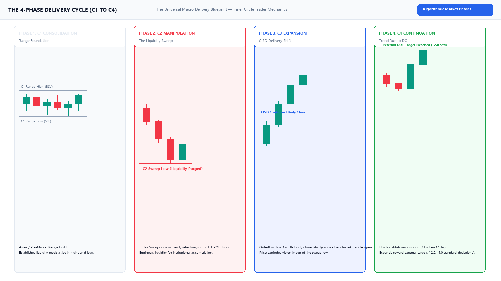

TTrades Fractal Model & Algorithmic Suite¶
The Core 4-Phase Delivery Cycle¶
Market delivery is governed by algorithmic four-phase cycles across all timeframes. Below is the complete anatomical schematic of the mechanical C1–C2–C3–C4 sequence that underpins every execution model in this framework:

Materials & Concepts Portal¶
Explore the curriculum modules, mechanical execution playbooks, and TradingView indicator guides:
Core Curriculum
Theoretical foundations, dealing range equilibrium, liquidity classification (ERL vs IRL), and multi-timeframe fractal alignment.
The 4 Entry Models
High-probability execution playbooks: Model 1 (CISD Breakout), Model 2 (50% T-Spot Limit), Model 3 (Micro CISD Sniper), and Model 4 (C4 Continuation).
CISD Deep Dive
Change in State of Delivery mechanics: benchmark candle open origin, orderflow shift validation, and wick rejection vs solid body close rules.
Pine Script Indicators
TradingView Pine Script v6 suite: Fractal Model Pro+, HTF Projection Suite, and POI Detectors with zero-repainting historical execution.
TradingView Alerts
Complete setup guide for real-time sound, push, and webhook notifications on confirmed candle closes so you never have to babysit charts.
Sessions & DST Schedule
Reference guide for London Open, NY AM, Key 09:50-10:10 Macros, and Daylight Saving Time (DST) shift adjustments for Forex and Indices.
Real Indicator Visual on TradingView¶
Below is an authentic high-resolution chart capture of the TTrades Fractal Model Pro+ [v6] running on NQ1! (1m execution with 15m HTF Projection Cluster):

Algorithmic Edge & Mechanical Rules¶
100% Rule-Based Orderflow Verification
Unlike discretionary methods that leave traders guessing whether a swing was swept or mitigated, the TTrades Fractal Model relies strictly on objective mathematical conditions:
- Candle Body Close: A Change in State of Delivery (CISD) requires a solid candle body close past the benchmark open price. Wick probes do NOT qualify.
- Origin Accuracy: The CISD benchmark ray begins strictly at the
Openof the first opposing candle that initiated the move into the C2 extreme. - Timeframe Fractality: Lower timeframe execution models only trigger inside higher timeframe Points of Interest (FVGs, Orderblocks, or Dealing Range Discount).
Use the global search bar (Ctrl + K) to search across all concepts, models, and indicator settings instantly!